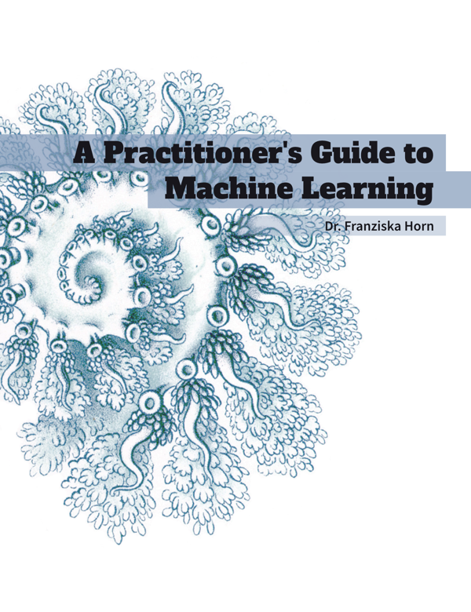

A Practitioner’s Guide to Machine Learning
Vorwort

Warum dieses Buch?
Es gibt viele Ressourcen für Machine Learning (ML; zu Deutsch “maschinelles Lernen”). Die meisten richten sich entweder an Studenten oder Forscher und sind sehr mathelastig, während andere in Form von Tutorials die konkrete Implementierung und Anwendung spezieller ML Algorithmen zur Lösung eines bestimmten Problems beschreiben. Dieses Buch versucht, einen Mittelweg zu finden zwischen dem theoretischen Hintergrund, den ich während meiner Promotion im Bereich Machine Learning an der TU Berlin vertieft habe, und der praktischen Anwendung dieser Algorithmen zur Lösung unterschiedlicher Probleme, was ich in den letzten Jahren als Data Science Beraterin für verschiedene Firmen getan habe. Dieses Buches entstand aus meiner Erfahrung mit dutzenden von Seminaren und Workshops zum maschinellen Lernen vor Publikum mit unterschiedlichem technischen und mathematischen Hintergrund.
Fragen, die dieses Buch beantwortet:
- Welche Probleme kann Machine Learning (ML) lösen?
- Wie löst ML diese Probleme, d.h. wie funktionieren die Algorithmen?
- Was sind häufige Fallstricke in der Praxis und wie vermeidet man diese?
Dieses Buch erklärt nicht die neuesten ausgefallenen neuronalen Netzwerkmodelle, die bei einer bestimmten Aufgabe eine state-of-the-art Performance erreichen. Es soll vielmehr ein grundlegendes Verständnis für die Ideen hinter den verschiedenen ML Algorithmen vermitteln, um ein solides Fundament zu schaffen und somit einen Rahmen vorzugeben, in den weiteres Wissen integriert werden kann.
Dieses Buch gibt es in zwei Versionen:
- Die ausführliche Version, die sich an (zukünftige) Data Scientists richtet (auf Englisch).
- Die vorliegende, komprimierte Version, die sich an ein allgemeineres Publikum richtet (gibts auch auf Englisch).
Diese Kurzfassung richtet sich an interessierte Leser, die verstehen wollen, was hinter dem Hype steckt und wo ML eingesetzt werden kann – oder besser nicht eingesetzt werden sollte. Die Vollversion ist hauptsächlich für ML-Anwender geschrieben und setzt voraus, dass der Leser mit elementaren Konzepten der linearen Algebra vertraut ist (siehe auch: Übersicht zur mathematischen Notation).
Wenn du die Inhalte des Buchs lieber etwas strukturierter in der Gruppe durcharbeiten möchtest, kannst du dich auch für einen meiner Online-Kurse anmelden. Dort hast du zusätzlich die Möglichkeit, Fragen zu diskutieren.
Dieses Manuskript ist noch in Arbeit! Ich freue mich sehr über Verbesserungsvorschläge per Email oder Feedback-Formular!
Tipp: Mit einem Klick auf das PDF-Icon oben links neben dem Titel kannst du das Buch auch als PDF herunterladen.
Viel Spaß! 😊
Danksagungen
Ich möchte mich bedanken bei: Antje Relitz, für ihr Feedback und ihre Beiträge zu den original Workshop-Materialien, Robin Horn für sein Feedback und seine Hilfe bei der Übersetzung des Buchs ins Deutsche, Karin Zink für ihre Hilfe bei einigen Grafiken (inkl. dem Buchcover1) und meinen Eltern fürs Korrekturlesen.
Zitieren
@book{horn2021mlpractitioner,
author = {Horn, Franziska},
title = {A Practitioner's Guide to Machine Learning},
year = {2021},
url = {https://franziskahorn.de/mlbook/},
}Buchcover mit einer Zeichnung eines Teils einer Siphonophorae (einer Quallenart) von Ernst Haeckel aus seinem Buch “Kunstformen der Natur” (1900, Tafel 37; Quelle: www.BioLib.de).↩︎